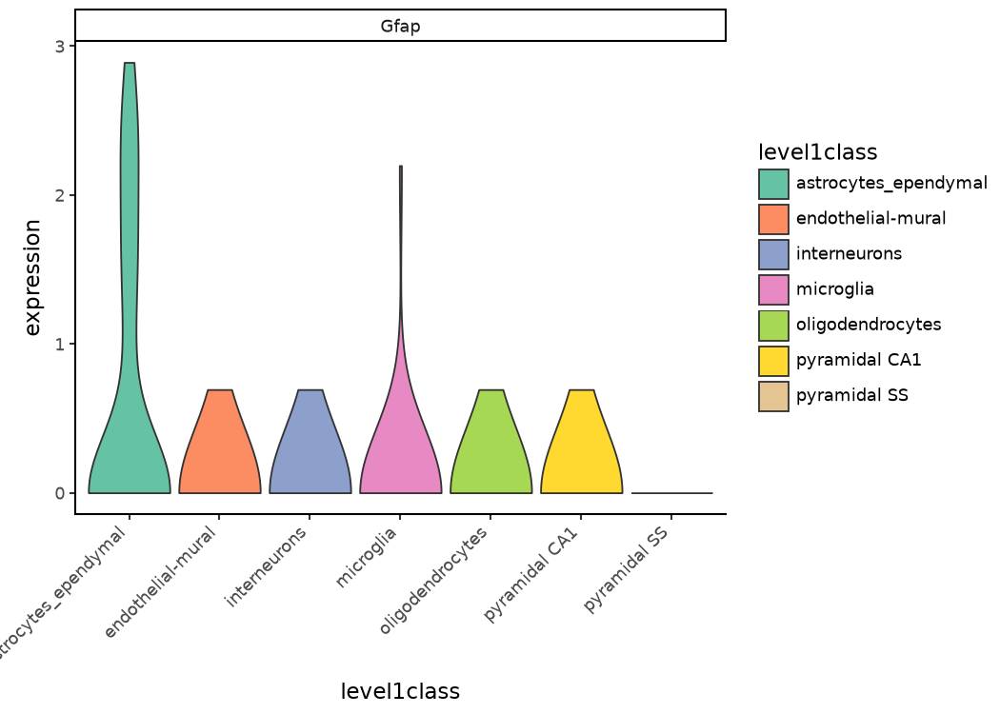
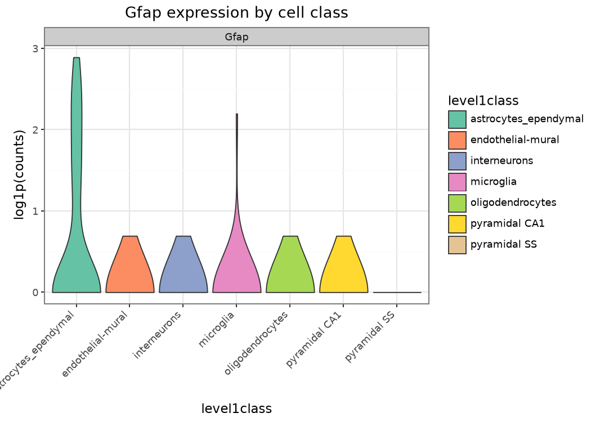
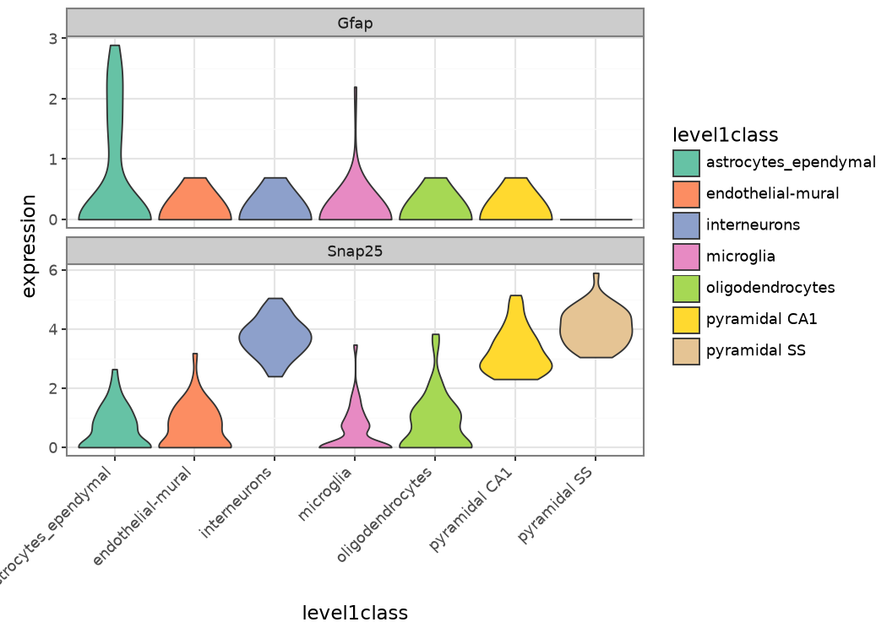

import sys, pathlib
sys.path.insert(0, str(pathlib.Path("_includes").resolve()))
import warnings
from setup import configure_warnings, ensure_matplotlib_initialized
ensure_matplotlib_initialized()
configure_warnings()
import numpy as np
import pandas as pd
import ggnomics as ggGetting started
One plotting interface for DataFrame, SingleCellExperiment, and AnnData
This guide introduces the main ggnomics interface with cells from the Zeisel et al. (2015) mouse brain study. We will draw the same expression plot from a pandas.DataFrame, a BiocPy SingleCellExperiment, and an anndata.AnnData object, then customize the result with plotnine.
1. Loading the example data
The introductory examples use a small stratified subset of the Zeisel dataset. load_zeisel_subset() fetches version 2023-12-14 through scrnaseq and samples up to n_per_class cells from each broad cell class.
The fixed seed makes the example reproducible. Stratifying by cell class also keeps small populations such as microglia represented in the subset.
from data import load_zeisel_subset
zeisel = load_zeisel_subset(n_per_class=40, seed=0)
type(zeisel)singlecellexperiment.SingleCellExperiment.SingleCellExperiment2. Inspecting the SingleCellExperiment
BiocPy provides public methods for retrieving assays and annotations:
zeisel.shape(20006, 280)zeisel.get_column_data().get_column_names()Names(['tissue', 'group #', 'total mRNA mol', 'well', 'sex', 'age', 'diameter', 'level1class', 'level2class'])list(zeisel.column_data.get_column("level1class"))[:5]['interneurons',
'interneurons',
'interneurons',
'interneurons',
'interneurons']zeisel.get_assay_names()['counts']A plain SummarizedExperiment provides similar access to assays and metadata, but it has no reduced_dimensions. The Zeisel object also arrives without a precomputed embedding. The scranpy workflow shows how to calculate PCA and UMAP and store them in the SCE.
3. The equivalent plotting table
The base plotting interface is a tidy pd.DataFrame: one row per cell or sample and one column per feature or annotation. Container adapters extract the same information automatically. Here is the corresponding table for one gene and two cell-level annotations:
import scipy.sparse as sp
counts = zeisel.get_assay("counts")
gene_names = zeisel.get_row_names()
gfap_idx = list(gene_names).index("Gfap") # astrocyte marker
gfap_expr = np.asarray(counts[gfap_idx, :].todense()).ravel() if sp.issparse(counts) else np.asarray(counts[gfap_idx, :]).ravel()
plot_df = zeisel.get_column_data().to_pandas()
plot_df["Gfap"] = gfap_expr
plot_df[["level1class", "total mRNA mol", "Gfap"]].head()| level1class | total mRNA mol | Gfap | |
|---|---|---|---|
| 1772067094_C05 | interneurons | 28534.0 | 0 |
| 1772067059_B06 | interneurons | 34216.0 | 0 |
| 1772071017_E10 | interneurons | 14859.0 | 0 |
| 1772067066_E10 | interneurons | 17201.0 | 0 |
| 1772067082_H11 | interneurons | 16936.0 | 0 |
4. Plotting from pandas
gg.plot_expression(plot_df, features=["Gfap"], group_by="level1class", log1p=True)
5. Plotting from the SingleCellExperiment directly
The same call accepts the SCE directly. Its registered adapter retrieves the assay and column data before delegating to the DataFrame implementation:
gg.plot_expression(zeisel, features=["Gfap"], group_by="level1class", log1p=True)
6. Converting to AnnData and plotting again
BiocPy containers convert to AnnData with a public .to_anndata() method:
adata, _alt_exps = zeisel.to_anndata()
adataAnnData object with n_obs × n_vars = 280 × 20006
obs: 'tissue', 'group #', 'total mRNA mol', 'well', 'sex', 'age', 'diameter', 'level1class', 'level2class', 'rownames'
var: 'featureType', 'rownames'
layers: 'counts'After this conversion, to_anndata() puts the assay into adata.layers["counts"] and leaves adata.X as None (there was no assay explicitly marked as the SCE’s primary “X” equivalent). ggnomics’s AnnData adapter reads .X when layer=None. You can therefore pass layer="counts" explicitly or assign the counts layer to .X after conversion:
adata.X = adata.layers["counts"]
gg.plot_expression(adata, features=["Gfap"], group_by="level1class", log1p=True)
All three calls use the same underlying measurements and produce the same plot.
7. How dispatch works
plot_expression, like the other public plot_* functions, is a functools.singledispatch generic. The base DataFrame implementation supplies the public docstring shown by ?gg.plot_expression, help(), and the API reference.
help(gg.plot_expression)Help on function plot_expression in module ggnomics.expression:
plot_expression(data: 'pd.DataFrame', features: 'List[str]', group_by: 'str', layer: 'Optional[str]' = None, color_by: 'Optional[str]' = None, palette: 'Optional[Dict]' = None, ncol: 'Optional[int]' = None, log1p: 'bool' = False, add_points: 'bool' = False, point_size: 'Optional[float]' = None, title: 'Optional[str]' = None) -> 'ggplot'
Violin plot of feature expression across cell/sample groups.
Each ``feature`` becomes one facet panel; the x-axis shows ``group_by``
categories and the y-axis shows expression level.
Args:
data: DataFrame whose rows are cells/samples. Requested ``features``
and ``group_by``/``color_by`` are columns.
features: Non-empty list of feature/gene column names to plot. Must
not contain duplicates or collide with ``group_by``/``color_by``.
group_by: Column whose categories define the x-axis groups.
layer: Present for cross-container signature consistency. Has no
effect for a plain DataFrame, which has no concept of layers.
color_by: Column to map to fill color. Defaults to ``group_by``.
palette: ``{category: hex}`` color mapping.
ncol: Number of columns in ``facet_wrap`` layout.
log1p: If ``True``, log1p-transform expression values before
plotting.
add_points: Overlay jittered points on violins.
point_size: Size of jittered points (``None`` → adaptive).
title: Plot title.
Returns:
A ``plotnine.ggplot`` object.
Raises:
TypeError: If no implementation is registered for ``type(data)``.
ValueError: If ``features`` is empty, contains duplicates, or
collides with ``group_by``/``color_by``.
KeyError: If a requested column is absent.
Adapters for AnnData, SingleCellExperiment, SummarizedExperiment, and MuData are registered when their corresponding packages are available:
import ggnomics._backends as backends
backends._BACKENDS{'anndata': 'ggnomics._backends.anndata',
'singlecellexperiment': 'ggnomics._backends.singlecellexperiment',
'summarizedexperiment': 'ggnomics._backends.summarizedexperiment',
'mudata': 'ggnomics._backends.mudata'}The core installation therefore works with DataFrames alone. Installing anndata or one of the BiocPy containers makes the matching implementation available without an additional registration step.
8. Inspecting and extending the returned object
Most plot_* functions return a plotnine.ggplot. Multi-panel and matrix functions may instead return a plotnine.composition.Compose or a small result object; these cases are listed in the plot gallery. For a ggplot, ordinary plotnine layers can be added directly:
from plotnine import theme_bw, theme, labs, facet_wrap, element_text
p = gg.plot_expression(plot_df, features=["Gfap"], group_by="level1class", log1p=True)
type(p)plotnine.ggplot.ggplot(
p
+ labs(title="Gfap expression by cell class", y="log1p(counts)")
+ theme_bw()
+ theme(axis_text_x=element_text(rotation=45, hjust=1))
)
plot_expression facets over features. Its plotting data contain group_by, feature, and expression, so an external facet_wrap() can only use columns retained by that reshape. Pass several features to use the built-in feature facets:
gg.plot_expression(
plot_df.assign(Snap25=np.asarray(
counts[list(gene_names).index("Snap25"), :].todense()
if sp.issparse(counts) else counts[list(gene_names).index("Snap25"), :]
).ravel()),
features=["Gfap", "Snap25"], group_by="level1class", log1p=True, ncol=1,
) + theme_bw() + theme(axis_text_x=element_text(rotation=45, hjust=1))
9. Saving a plot
Use plotnine’s ggplot.save() for a single panel. Multi-panel Compose objects can be saved with ggnomics.save_composition, as shown under Composed panels.
out_path = pathlib.Path("_freeze_assets")
out_path.mkdir(exist_ok=True)
p.save(out_path / "gfap_by_class.png", width=6, height=4, dpi=150, verbose=False)10. Common errors
Unknown column — container adapters raise a KeyError when a requested annotation is absent:
try:
gg.plot_expression(plot_df, features=["Gfap"], group_by="not_a_real_column")
except KeyError as exc:
print("KeyError:", exc)KeyError: "Column(s) ['not_a_real_column'] not found in the DataFrame. Available: ['tissue', 'group #', 'total mRNA mol', 'well', 'sex', 'age', 'diameter', 'level1class', 'level2class', 'rownames', 'Gfap']"No stored embedding — plot_umap, plot_pca, and plot_reduced_dim require coordinates in the relevant reduced-dimension slot. A plain SummarizedExperiment, or an SCE before dimensionality reduction, cannot supply them:
try:
gg.plot_umap(zeisel, color="level1class")
except (TypeError, KeyError, AttributeError) as exc:
print(f"{type(exc).__name__}:", exc)KeyError: "Embedding 'X_umap' not found in SCE reduced dimensions. Available: []"(Zeisel has no stored UMAP/PCA — see Single-cell analysis with scranpy to compute one and make this call succeed.)
Optional package not installed — an SCE, AnnData, or MuData implementation is only registered when its container package is importable. Without it, the generic function reports that no implementation exists for the supplied type.
Next steps
- Single-cell analysis with scranpy — the full Zeisel dataset through QC → normalization → HVG → PCA → clustering → UMAP pipeline, with ggnomics plots at every stage.
- Bulk RNA-seq — PyDESeq2 differential expression on a rice salt-stress experiment.
- Multimodal — RNA/ADT CITE-seq interoperability.
- Specialized plots and the plot gallery for everything else.